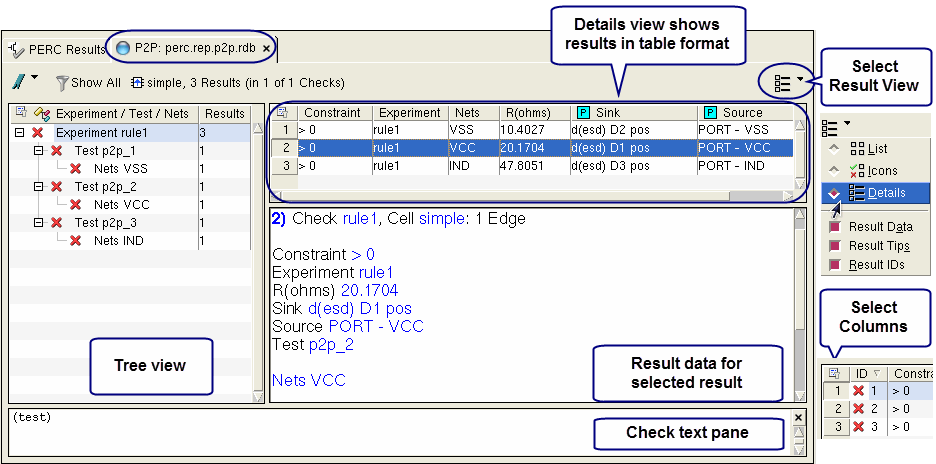
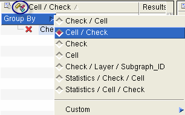
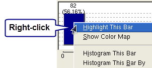

This procedure
shows how to view the LDL P2P results in Calibre RVE and debug resistance
problems by reviewing properties such as the resistance, constraint,
and net name. You can create histograms and colormaps of the properties.
Procedure
- Open your layout in your layout
viewer.
- Start Calibre RVE in PERC
mode and open the DFM database from the LDL P2P run. See “Opening LDL P2P Results in Calibre RVE” for complete instructions.
- Click the P2P: perc_report_name.p2p.rdb tab;
data is displayed in table format by default, as shown in Figure 1.
Figure 1. P2P Tab in Calibre
RVE for PERC LDL
The Details view shows statistics
about each parasitic resistor result polygon. You can right-click
any column header for a context-sensitive menu. Following is the complete
list of column descriptions.
The value “NaN” is given for
some measurements when a polygon is missing in disjoint path results
or when certain nets are not netlisted by the parasitic extractor. Other
values show “N/A” when they are not available.
ID —
Internally generated result number.
Constraint —
Value in ohms specified using the perc::export_pin_pair -p2p option.
Experiment —
Experiment name (rule check).
Net —
Net name.
R(ohms) —
Resistance in ohms of the Net polygons between the Source and Sink.
The value “NaN” is given when a polygon is missing in disjoint path
results.
Sink —
Sink pin identifier. Shows the device type, device name, and pin
name.
Source —
Source pin identifier. Shows the source type and net name.
Test —
Test name.
- Optional. You can click the Group By button (
 ) to
select the grouping in the tree view. Results are grouped by Experiment/Test/Net
by default.
) to
select the grouping in the tree view. Results are grouped by Experiment/Test/Net
by default.
| |
The Custom grouping option
allows you to group by properties. When specifying a Custom grouping,
click the top entry of a menu selection to end the grouping hierarchy;
see “Tree View with Custom Grouping” in the Calibre RVE User’s Manual for
complete instructions.
|

|
- Expand the results tree on
the left and select an Experiment or Test. The failures for that
group appear in the results table, as shown in Step 3.
- Select a result row in the
table and press H on your keyboard. The result highlights in the
layout editor. LDL P2P results are shown as a flyline.
When you have analyzed all
the results that interest you in a given cell, repeat Steps 5 and
6 for the remaining results.
- To create a histogram of the
resistance, select the result set of interest in the tree view,
then right click the “R(ohms)” column header in the results table
and select Histogram R(ohms).
A histogram of the property
values appears.
This gives a graphical representation
of the frequency of results within the specified ranges of values.
You can modify the appearance of the histogram by right-clicking
in the graph and selecting Show
Range Controls. A control panel appears with various
options for changing the appearance of the histogram.
- To highlight data from one
of the histogram bars, right-click the bar and select Highlight This Bar.
| |
All results represented by
the selected bar are highlighted in the layout.
To highlight all results using the histogram
color scheme, select Show Color Map.
Repeat Steps 7 and 8 for other experiments and properties.
|

|
Results
For each of the rule checks, use the
Calibre RVE functions shown in the Procedure section to determine
the portions of your layout that need to be modified. After making
the modifications, run DRC, LVS, and LDL P2P again to verify your
layout is clean.
You can click the Bookmarks button, , to save a view configuration;
see “Bookmarks for Result Tab Views in Calibre RVE for PERC” in the Calibre
RVE User’s Manual.